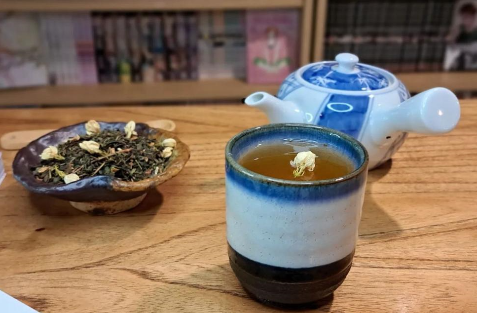
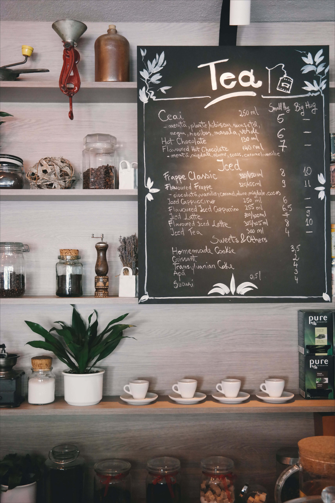

Arnolú nació de un sueño tejido entre risas y charlas universitarias. Ariadna, Noelia y Lucía, tres amigas con una pasión compartida por el arte de las infusiones, vieron más allá de las tazas humeantes y los aromas embriagadores.
Las lecciones universitarias pronto se convirtieron en aprendizajes prácticos: mezclando sabores, diseñando espacios acogedores y construyendo no solo una casa de té, sino un hogar para quienes buscan más que una bebida caliente.
Así, Arnolú nació de la combinación de sus nombres: Ariadna, Noelia y Lucía, un rincón acogedor donde cada detalle cuenta una historia, donde cada taza tiene su propia melodía.
Hoy, en cada esquina de Arnolú, encuentras fragmentos de sus historias entrelazadas con la calidez de la amistad que crearon hace años.